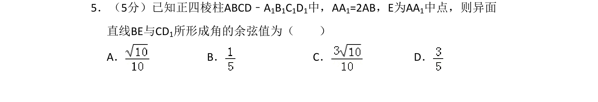
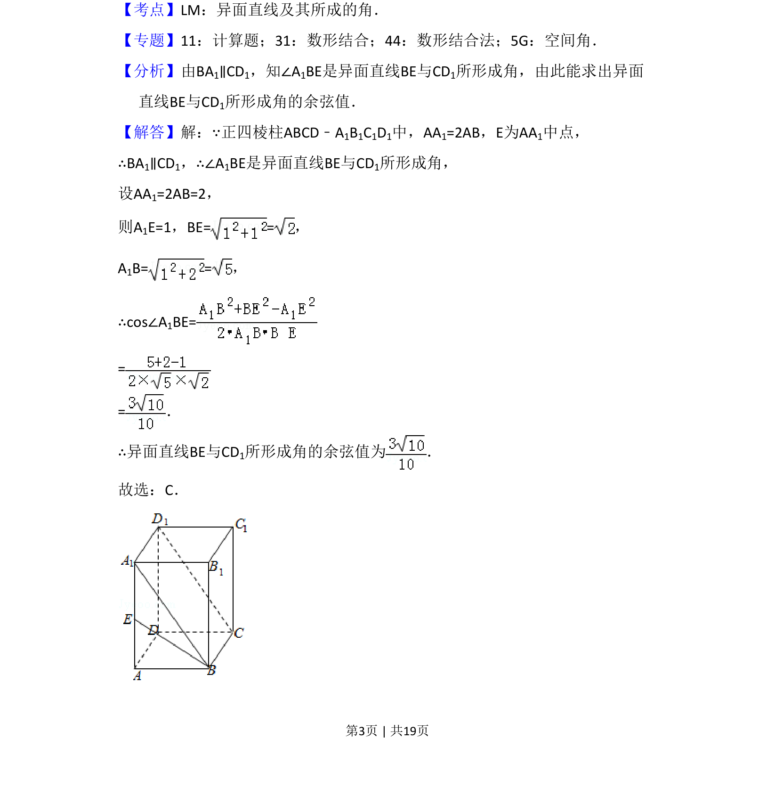
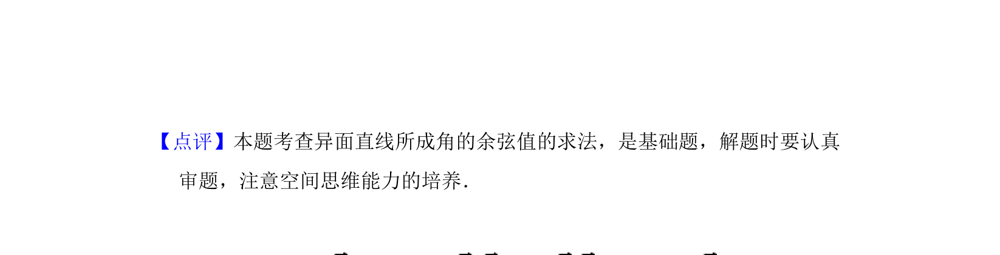

考点：异面直线所成角 空间几何体的结构特征 余弦定理

在正四棱柱中，通过平移直线构造异面直线所成角，并利用余弦定理求其余弦值。


📄 原 PDF 第 3 页：
素材/真题/吉林/2008-2024·（吉林）数学高考真题/2009年高考数学试卷（理）（全国卷Ⅱ）（解析卷）.pdf
5．（5分）已知正四棱柱ABCD﹣A1B1C1D1中，AA1=2AB，E为AA1中点，则异面 直线BE与CD1所形成角的余弦值为（ ） A．B．C．D．
【考点】LM：异面直线及其所成的角．菁优网版权所有 【专题】11：计算题；31：数形结合；44：数形结合法；5G：空间角． 【分析】由BA1∥CD1，知∠A1BE是异面直线BE与CD1所形成角，由此能求出异面 直线BE与CD1所形成角的余弦值． 【解答】解：∵正四棱柱ABCD﹣A1B1C1D1中，AA1=2AB，E为AA1中点， ∴BA1∥CD1，∴∠A1BE是异面直线BE与CD1所形成角， 设AA1=2AB=2， 则A1E=1，BE= =， A1B= =， ∴cos∠A1BE= = =． ∴异面直线BE与CD1所形成角的余弦值为 ． 故选：C．